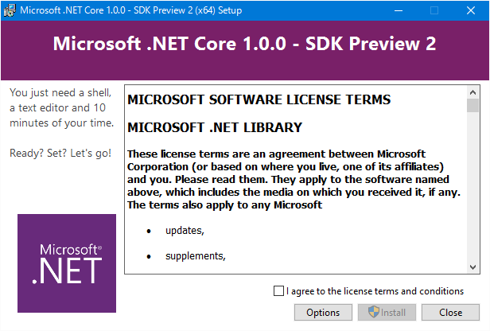
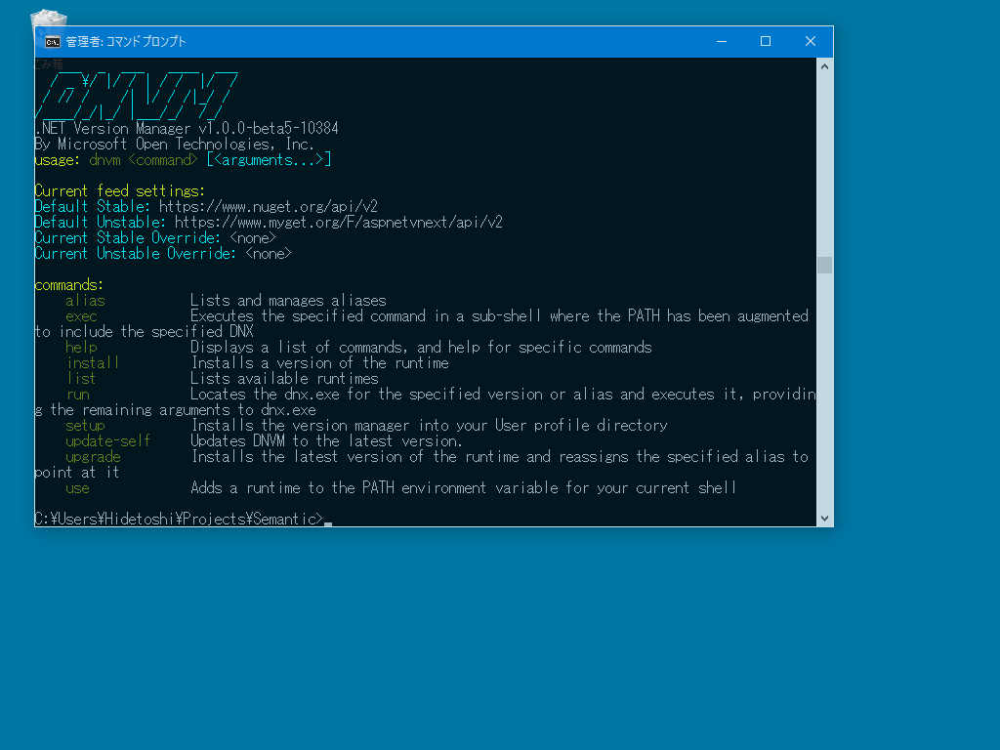
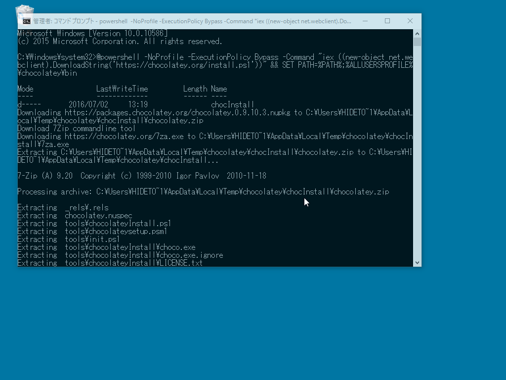
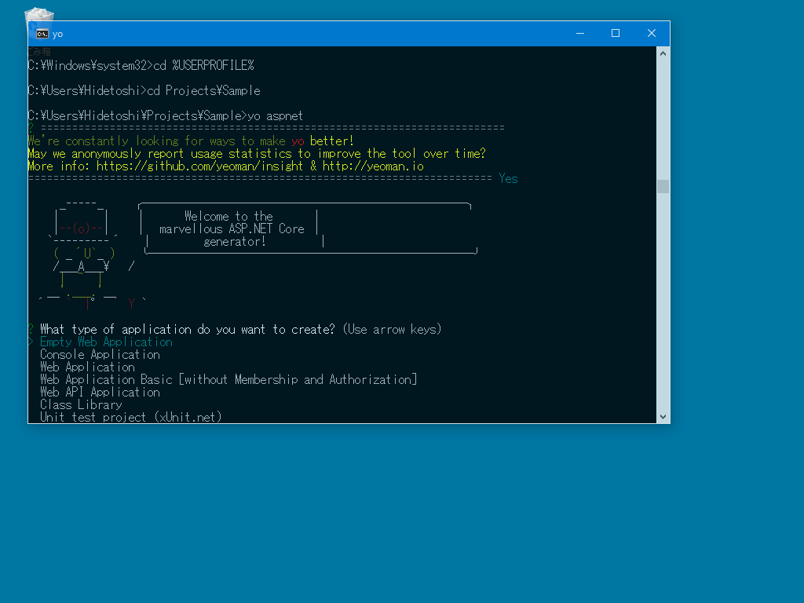
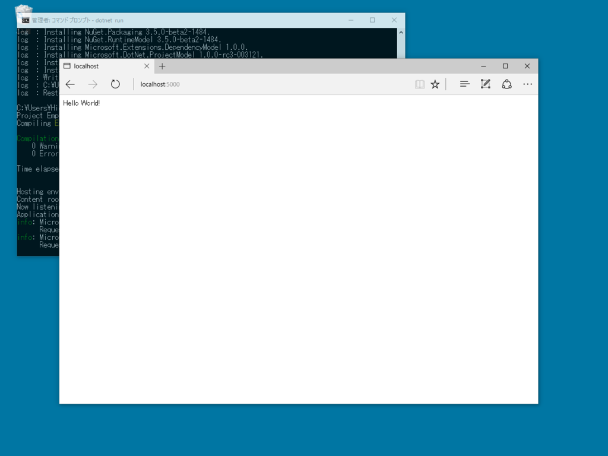
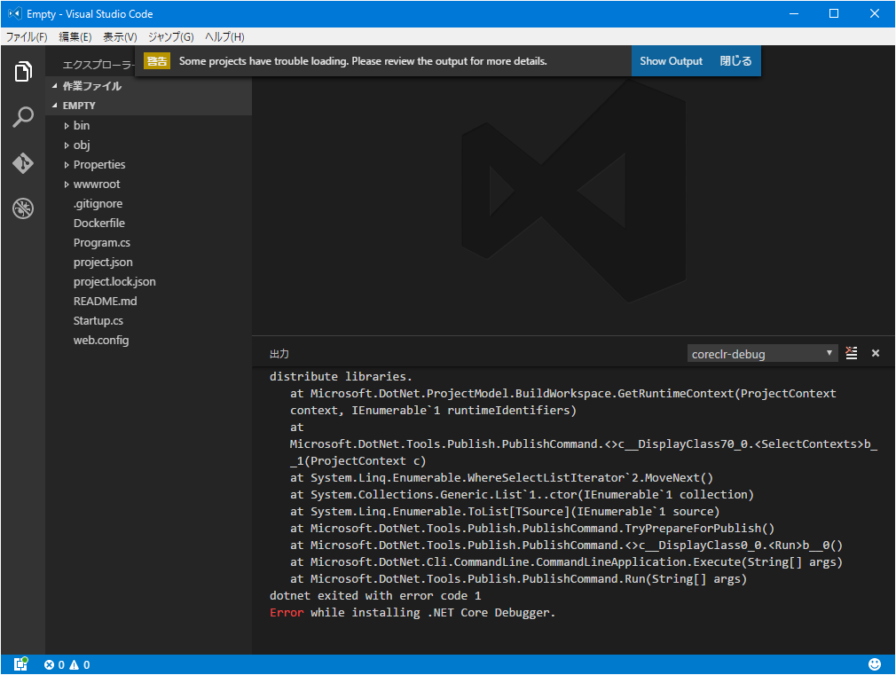

ASP.NET Core なるものを Visual Studio Code でしてみむとするなり
執筆日時：
をのこもすなる ASP.NET Core といふものを、だるやなぎも Visual Studio Code でしてみむとてするなり。ちなみに、ここでの作業内容は
にほぼ書かれているので、そっちを読む方がよい。
.NET Core SDK for Windows のインストール

まずはこれが必要らしい。“Preview 2”とか書いてあるけど気にせずインストールした。
セットアップは一瞬で終わる。
追記

これをインストールすると dnvm（DotNet Version Manager）コマンドが利用できるようになるのかな？
Chocolatey のインストール

ここからは node.js や npm のセットアップに入るのだが、コマンドラインでやってしまいたいので、Chocolatey をインストールする。
Chocolatey というのは Linux で言うところの yum や apt-get みたいなもの（Linux はあんまり知らんけど）。管理者権限で「コマンド プロンプト」を起動し、Chocolatery の公式サイトに書いてある呪文を入力する。
Microsoft Windows [Version 10.0.10586] (c) 2015 Microsoft Corporation. All rights reserved.C:\Windows\system32>@powershell -NoProfile -ExecutionPolicy Bypass -Command "iex ((new-object net.webclient).DownloadString('https://chocolatey.org/install.ps1'))" && SET PATH=%PATH%;%ALLUSERSPROFILE%\chocolatey\bin
Mode LastWriteTime Length Name
d—– 2016/07/02 13:19 chocInstall Downloading https://packages.chocolatey.org/chocolatey.0.9.10.3.nupkg to C:\Users\HIDETO~1\AppData\Local\Temp\chocolatey\chocInstall\chocolatey.zip Download 7Zip commandline tool Downloading https://chocolatey.org/7za.exe to C:\Users\HIDETO~1\AppData\Local\Temp\chocolatey\chocInstall\7za.exe Extracting C:\Users\HIDETO~1\AppData\Local\Temp\chocolatey\chocInstall\chocolatey.zip to C:\Users\HIDETO~1\AppData\Local\Temp\chocolatey\chocInstall…
7-Zip (A) 9.20 Copyright (c) 1999-2010 Igor Pavlov 2010-11-18
Processing archive: C:\Users\HIDETO~1\AppData\Local\Temp\chocolatey\chocInstall\chocolatey.zip
Extracting _rels.rels Extracting chocolatey.nuspec Extracting tools\chocolateyInstall.ps1 : : Extracting tools\chocolateyInstall\tools\shimgen.license.txt Extracting package\services\metadata\core-properties\1a0b5bbf338444a596bb1ebebba80b77.psmdcp Extracting [Content_Types].xml
Everything is Ok
Files: 87 Size: 11891084 Compressed: 7214019 Installing chocolatey on this machine Creating ChocolateyInstall as an environment variable (targeting 'Machine') Setting ChocolateyInstall to 'C:\ProgramData\chocolatey' WARNING: It's very likely you will need to close and reopen your shell before you can use choco. Restricting write permissions to Administrators We are setting up the Chocolatey package repository. The packages themselves go to 'C:\ProgramData\chocolatey\lib' (i.e. C:\ProgramData\chocolatey\lib\yourPackageName). A shim file for the command line goes to 'C:\ProgramData\chocolatey\bin' and points to an executable in 'C:\ProgramData\chocolatey\lib\yourPackageName'.
Creating Chocolatey folders if they do not already exist.
WARNING: You can safely ignore errors related to missing log files when upgrading from a version of Chocolatey less than 0.9.9. 'Batch file could not be found' is also safe to ignore. 'The system cannot find the file specified' - also safe. chocolatey.nupkg file not installed in lib. Attempting to locate it from bootstrapper. PATH environment variable does not have C:\ProgramData\chocolatey\bin in it. Adding… Adding Chocolatey to the profile. This will provide tab completion, refreshenv, etc. WARNING: Chocolatey profile installed. Reload your profile - type . $profile Chocolatey (choco.exe) is now ready. You can call choco from anywhere, command line or powershell by typing choco. Run choco /? for a list of functions. You may need to shut down and restart powershell and/or consoles first prior to using choco. Ensuring chocolatey commands are on the path Ensuring chocolatey.nupkg is in the lib folder
これで choco コマンドによるパッケージのインストールや削除が可能となる。
node.js と npm のインストール
次に nodejs パッケージと npm パッケージを Chocolatey でインストール。
C:\Windows\system32>choco Chocolatey v0.9.10.3C:\Windows\system32>choco install npm Installing the following packages: npm By installing you accept licenses for the packages.
npm v1.4.9.20150213 [Approved] ： ：
C:\Windows\system32>choco install nodejs Installing the following packages: nodejs By installing you accept licenses for the packages.
nodejs.install v6.2.2 [Approved] ： ：
Chocolatey installed 2/2 packages. 0 packages failed. See the log for details (C:\ProgramData\chocolatey\logs\chocolatey.log).
簡単だな。refreshenv コマンドで環境変数を再読み込みしておけというので、従っておく。
C:\Windows\system32>refreshenv Reading environment variables from registry. Please wait... Done.
yo bower grunt-cli gulp を npm でインストール
次に yoeman をインストールする。
Yoeman（ヨーマン）というのはアプリケーションのテンプレートジェネレーターらしい。JavaScript や CSS のパッケージマネージャー bower やビルドツール grunt が必要になるので、一緒にインストールしておく。
C:\Windows\system32>npm install -g yo bower grunt-cli gulp npm http GET https://registry.npmjs.org/yo npm http GET https://registry.npmjs.org/gulp npm http GET https://registry.npmjs.org/bower ： ： npm http 200 https://registry.npmjs.org/typedarray/-/typedarray-0.0.6.tgz npm http GET https://registry.npmjs.org/buffer-shims npm http 304 https://registry.npmjs.org/buffer-shims> spawn-sync@1.0.15 postinstall C:\Program Files\nodejs\node_modules\yo\node_modules\tabtab\node_modules\inquirer\node_modules\external-editor\node_modules\spawn-sync > node postinstall
> spawn-sync@1.0.15 postinstall C:\Program Files\nodejs\node_modules\yo\node_modules\yeoman-environment\node_modules\inquirer\node_modules\external-editor\node_modules\spawn-sync > node postinstall
C:\Program Files\nodejs\yo -> C:\Program Files\nodejs\node_modules\yo\lib\cli.js C:\Program Files\nodejs\yo-complete -> C:\Program Files\nodejs\node_modules\yo\lib\completion\index.js
> yo@1.8.4 postinstall C:\Program Files\nodejs\node_modules\yo > yodoctor
Yeoman Doctor Running sanity checks on your system
√ Global configuration file is valid √ NODE_PATH matches the npm root √ Node.js version √ No .bowerrc file in home directory √ No .yo-rc.json file in home directory √ npm version
Everything looks all right! C:\Program Files\nodejs\bower -> C:\Program Files\nodejs\node_modules\bower\bin\bower grunt-cli@1.2.0 C:\Program Files\nodejs\node_modules\grunt-cli ├── grunt-known-options@1.1.0 ├── nopt@3.0.6 (abbrev@1.0.9) ├── resolve@1.1.7 └── findup-sync@0.3.0 (glob@5.0.15)
gulp@3.9.1 C:\Program Files\nodejs\node_modules\gulp ├── interpret@1.0.1 ├── pretty-hrtime@1.0.2 ├── deprecated@0.0.1 ├── archy@1.0.0 ├── minimist@1.2.0 ├── semver@4.3.6 ├── v8flags@2.0.11 (user-home@1.1.1) ├── tildify@1.2.0 (os-homedir@1.0.1) ├── chalk@1.1.3 (escape-string-regexp@1.0.5, supports-color@2.0.0, ansi-styles@2.2.1, has-ansi@2.0.0, strip-ansi@3.0.1) ├── orchestrator@0.3.7 (stream-consume@0.1.0, sequencify@0.0.7, end-of-stream@0.1.5) ├── liftoff@2.2.4 (rechoir@0.6.2, extend@3.0.0, flagged-respawn@0.3.2, resolve@1.1.7, findup-sync@0.3.0) ├── vinyl-fs@0.3.14 (graceful-fs@3.0.8, strip-bom@1.0.0, vinyl@0.4.6, defaults@1.0.3, mkdirp@0.5.1, through2@0.6.5, glob-stream@3.1.18, glob-watcher@0.0.6) └── gulp-util@3.0.7 (array-differ@1.0.0, lodash._reevaluate@3.0.0, lodash._reinterpolate@3.0.0, lodash._reescape@3.0.0, beeper@1.1.0, object-assign@3.0.0, array-uniq@1.0.3, replace-ext@0.0.1, has-gulplog@0.1.0, fancy-log@1.2.0, gulplog@1.0.0, vinyl@0.5.3, lodash.template@3.6.2, through2@2.0.1, multipipe@0.1.2, dateformat@1.0.12)
yo@1.8.4 C:\Program Files\nodejs\node_modules\yo ├── cli-list@0.1.8 ├── titleize@1.0.0 ├── async@1.5.2 ├── humanize-string@1.0.1 (decamelize@1.2.0) ├── figures@1.7.0 (escape-string-regexp@1.0.5, object-assign@4.1.0) ├── user-home@2.0.0 (os-homedir@1.0.1) ├── repeating@2.0.1 (is-finite@1.0.1) ├── opn@3.0.3 (object-assign@4.1.0) ├── string-length@1.0.1 (strip-ansi@3.0.1) ├── chalk@1.1.3 (supports-color@2.0.0, ansi-styles@2.2.1, escape-string-regexp@1.0.5, has-ansi@2.0.0, strip-ansi@3.0.1) ├── root-check@1.0.0 (downgrade-root@1.2.2, sudo-block@1.2.0) ├── sort-on@1.3.0 (arrify@1.0.1, dot-prop@2.4.0) ├── yeoman-character@1.1.0 (supports-color@3.1.2) ├── parse-help@0.1.1 (execall@1.0.0) ├── yosay@1.2.0 (ansi-styles@2.2.1, wrap-ansi@2.0.0, strip-ansi@3.0.1, cli-boxes@1.0.0, pad-component@0.0.1, ansi-regex@2.0.0, taketalk@1.0.0, string-width@1.0.1) ├── cross-spawn@3.0.1 (lru-cache@4.0.1, which@1.2.10) ├── got@5.6.0 (lowercase-keys@1.0.0, timed-out@2.0.0, is-redirect@1.0.0, is-retry-allowed@1.0.0, is-plain-obj@1.1.0, unzip-response@1.0.0, duplexer2@0.1.4, node-status-codes@1.0.0, is-stream@1.1.0, read-all-stream@3.1.0, create-error-class@3.0.2, pinkie-promise@2.0.1, url-parse-lax@1.0.0, object-assign@4.1.0, parse-json@2.2.0, readable-stream@2.1.4) ├── meow@3.7.0 (trim-newlines@1.0.0, map-obj@1.0.1, decamelize@1.2.0, object-assign@4.1.0, camelcase-keys@2.1.0, minimist@1.2.0, loud-rejection@1.5.0, redent@1.0.0, normalize-package-data@2.3.5) ├── update-notifier@0.6.3 (is-npm@1.0.0, latest-version@2.0.0, semver-diff@2.1.0, configstore@2.0.0, boxen@0.3.1) ├── package-json@2.3.2 (registry-url@3.1.0, semver@5.2.0, rc@1.1.6) ├── npm-keyword@4.2.0 (object-assign@4.1.0, pinkie-promise@2.0.1, registry-url@3.1.0) ├── inquirer@0.11.4 (strip-ansi@3.0.1, ansi-regex@2.0.0, ansi-escapes@1.4.0, rx-lite@3.1.2, through@2.3.8, cli-width@1.1.1, run-async@0.1.0, string-width@1.0.1, cli-cursor@1.0.2, readline2@1.0.1) ├── configstore@1.4.0 (os-tmpdir@1.0.1, object-assign@4.1.0, xdg-basedir@2.0.0, graceful-fs@4.1.4, osenv@0.1.3, uuid@2.0.2, write-file-atomic@1.1.4, mkdirp@0.5.1) ├── read-pkg-up@1.0.1 (find-up@1.1.2, read-pkg@1.1.0) ├── fullname@2.1.0 (pify@2.3.0, pinkie-promise@2.0.1, npmconf@2.1.2) ├── yeoman-doctor@2.1.0 (object-values@1.0.0, log-symbols@1.0.2, semver@5.2.0, each-async@1.1.1, bin-version-check@2.1.0, twig@0.8.9) ├── lodash@3.10.1 ├── insight@0.7.0 (tough-cookie@2.2.2, object-assign@4.1.0, lodash.debounce@3.1.1, inquirer@0.10.1, os-name@1.0.3, request@2.72.0) ├── yeoman-environment@1.6.1 (log-symbols@1.0.2, escape-string-regexp@1.0.5, untildify@2.1.0, text-table@0.2.0, debug@2.2.0, diff@2.2.3, globby@4.1.0, mem-fs@1.1.3, grouped-queue@0.3.2, inquirer@1.1.0, lodash@4.13.1) └── tabtab@1.3.2 (object-assign@4.1.0, minimist@1.2.0, debug@2.2.0, mkdirp@0.5.1, npmlog@2.0.4, inquirer@1.1.0)
bower@1.7.9 C:\Program Files\nodejs\node_modules\bower
generator-aspnet を npm でインストール
最後に generator-aspnet をインストール。これをインストールすると yo aspnet でアプリケーションのひな形が作れるみたい。
C:\Windows\system32>npm install -g generator-aspnet npm http GET https://registry.npmjs.org/generator-aspnet npm http 200 https://registry.npmjs.org/generator-aspnet npm http GET https://registry.npmjs.org/generator-aspnet/-/generator-aspnet-0.2.0.tgz ： ： npm http 304 https://registry.npmjs.org/escape-string-regexp npm http 200 https://registry.npmjs.org/strip-ansi/-/strip-ansi-2.0.1.tgz npm http 200 https://registry.npmjs.org/mute-stream/-/mute-stream-0.0.4.tgz generator-aspnet@0.2.0 C:\Program Files\nodejs\node_modules\generator-aspnet ├── vs_projectname@1.0.2 ├── uuid@2.0.2 ├── mkdirp@0.5.1 (minimist@0.0.8) ├── chalk@1.1.3 (escape-string-regexp@1.0.5, ansi-styles@2.2.1, supports-color@2.0.0, strip-ansi@3.0.1, has-ansi@2.0.0) ├── yosay@1.2.0 (ansi-regex@2.0.0, wrap-ansi@2.0.0, cli-boxes@1.0.0, pad-component@0.0.1, strip-ansi@3.0.1, ansi-styles@2.2.1, taketalk@1.0.0, string-width@1.0.1, repeating@2.0.1) ├── chai@3.5.0 (assertion-error@1.0.2, type-detect@1.0.0, deep-eql@0.1.3) ├── findup-sync@0.3.0 (glob@5.0.15) ├── nconf@0.8.4 (ini@1.3.4, secure-keys@1.0.0, async@1.5.2, yargs@3.32.0) └── yeoman-generator@0.19.2 (detect-conflict@1.0.0, read-chunk@1.0.1, diff@1.4.0, yeoman-welcome@1.0.1, xdg-basedir@1.0.1, user-home@1.1.1, async@0.9.2, mime@1.3.4, dargs@4.1.0, text-table@0.2.0, nopt@3.0.6, class-extend@0.1.2, debug@2.2.0, cross-spawn@0.2.9, istextorbinary@1.0.2, shelljs@0.4.0, mem-fs-editor@1.2.3, through2@0.6.5, glob@5.0.15, run-async@0.1.0, cli-table@0.3.1, findup-sync@0.2.1, yeoman-assert@1.0.0, rimraf@2.5.2, pretty-bytes@1.0.4, github-username@1.1.1, underscore.string@3.3.4, dateformat@1.0.12, sinon@1.17.4, download@4.4.3, html-wiring@1.2.0, lodash@3.10.1, inquirer@0.8.5, yeoman-environment@1.6.1, gruntfile-editor@1.2.0)
これでようやく準備が完成。ここまでの作業が必要なのは最初だけで、次回からは yo aspnet だけでアプリケーションのスケルトンを作成できる……のだと思う。
ASP.NET プロジェクトの作成

ここからは Visual Studio Code 内蔵のシェルでやろうと思ったんだけど、いろいろ動きがヤバかったので、引き続き「コマンド プロンプト」で。
- プロジェクト管理フォルダーへ移動（今回は %USERPROFILE%\Projects にした）
- yo aspnet
- プロジェクトタイプを選択
- プロジェクト名を指定
- （管理フォルダーの下にプロジェクトフォルダーが生成される）
- プロジェクトフォルダーへ移動
- そこで Visual Studio Code を起動する（code .）
みたいなのが大まかな流れ。最初試したときは先に mkdir してプロジェクトフォルダーを作成してコマンドを使ったのだけど、その下にまたプロジェクトフォルダーを掘られてしまった。あわあわ
C:\Windows\system32>cd %USERPROFILE%C:\Windows\system32>cd Projects
C:\Users\Hidetoshi\Projects>yo aspnet
—– ╭──────────────────────────╮ | | │ Welcome to the │ |–(o)–| │ marvellous ASP.NET Core │
---------´ │ generator! │ ( _´U_ ) ╰──────────────────────────╯ /___A___\ / | ~ | __'.___.'__ ´|° ´ Y? What type of application do you want to create? Empty Web Application ? What's the name of your ASP.NET application? Empty create Empty.gitignore create Empty\Program.cs create Empty\Startup.cs create Empty\project.json create Empty\web.config create Empty\Dockerfile create Empty\Properties\launchSettings.json create Empty\README.md
Your project is now created, you can use the following commands to get going cd "Empty" dotnet restore dotnet build (optional, build will also happen when it's run) dotnet run
あとはプロジェクトフォルダーに移動して
- dotnet restore
- dotnet run
でいいみたい。new、restore、run ね。ハイハイ。restore は足りないものをいろいろもってきてくれるコマンドかな？
C:\Users\Hidetoshi\Projects>cd EmptyC:\Users\Hidetoshi\Projects\Empty>dotnet restore log : Restoring packages for C:\Users\Hidetoshi\Projects\Empty\project.json… log : Installing System.Net.WebSockets 4.0.0. log : Installing System.Diagnostics.Contracts 4.0.1. ： ： log : Writing lock file to disk. Path: C:\Users\Hidetoshi\Projects\Empty\project.lock.json log : C:\Users\Hidetoshi\Projects\Empty\project.json log : Restore completed in 18618ms.
C:\Users\Hidetoshi\Projects\Empty>dotnet run Project Empty (.NETCoreApp,Version=v1.0) will be compiled because expected outputs are missing Compiling Empty for .NETCoreApp,Version=v1.0
Compilation succeeded. 0 Warning(s) 0 Error(s)
Time elapsed 00:00:01.7059179
Hosting environment: Production Content root path: C:\Users\Hidetoshi\Projects\Empty Now listening on: http://localhost:5000 Application started. Press Ctrl+C to shut down. info: Microsoft.AspNetCore.Hosting.Internal.WebHost[1] Request starting HTTP/1.1 GET http://localhost:5000/ info: Microsoft.AspNetCore.Hosting.Internal.WebHost[2] Request finished in 90.0779ms 200

http://localhost:5000/ を叩いたら、“Hello! World”が表示された。Empty テンプレートはシンプルすぎてちょっとよくわからなさ過ぎた（await context.Response.WriteAsync(“Hello World!");！）ので、最初はフツーのテンプレートを作って処理を追っていくと構造が把握しやすいかも。

あと Visual Studio Code でなんか OmniSharp のエラーが出たんだけど、大丈夫かな。今まで WebMatrix で甘やかされてきたからコマンドラインは苦行だけど、Rails のころはフツーにやってたわけで、がんばればなんとか慣れると思う。
追記
[ERROR:OmniSharp.Dnx.DnxPaths] The specified runtime path 'default' does not exist. というエラーは、「コマンド プロンプト」で dnvm upgrade をかけると解消された。
Error while installing .NET Core Debugger というエラーは放置。
なんかバージョンの齟齬があるっぽいけど（？）、Preview だし、多少はね？ って感じ。